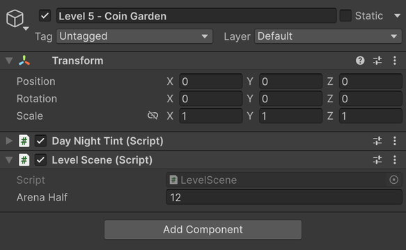
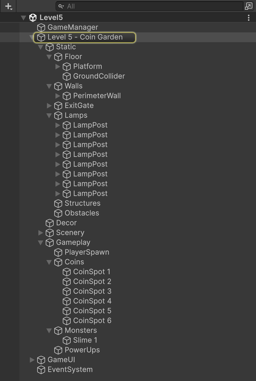
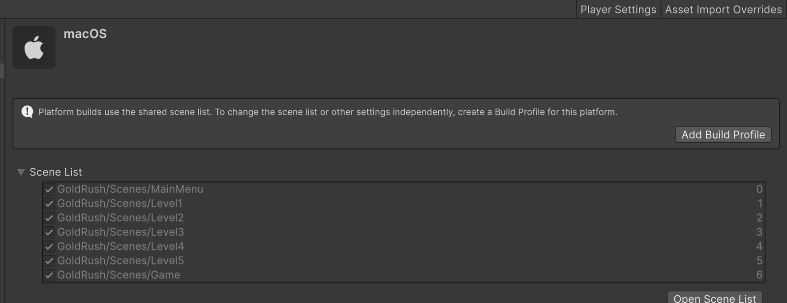

GOLD RUSH · Practice
Practicals: design your own levels
You know the whole game now. In these practicals you are the level designer. You build four new levels with the pieces you already have: the kit in Prefabs/Level and the markers in Prefabs/Markers (start, coins, monsters, power-ups). No new scripts. This page shows how to add any new level to the game and gives you the rules of good level design. Then the four practicals go from easy to hard.
Guard Tower
A vault in the middle with a Mushroom King and its Home. Coins behind cover, a GHOST power-up.
1What you need
- The Phase 10 package
GoldRush_Phase10_Final.unitypackageimported into your project, with all six scenes in the Scene List. Levels 1–4 play, and the menu shows 4 level cards and the DAILY RUSH card. - The
Level1scene from that package. Every practical starts as a copy of it, so theGameManager, theGameUI, theEventSystem, the floor, the walls and the gate are already there. (The Player, the camera and the sun are not in the scene: the GameManager makes them when you press Play.) - The kit in
Prefabs/Level(walls, blocks, pillars, lamps, …) and the markers inPrefabs/Markers:Marker prefab Component What the game makes there at Play PlayerSpawnPlayer Spawn The hero and the camera (one per level) CoinSpotCoin Spot A coin, 1 m above the marker Monster_Slime,Monster_Ghost,Monster_MushroomKingMonster Spawn (Type = Patroller / Chaser / Guard) That monster PowerUp_Speed,PowerUp_Ghost,PowerUp_MagnetPower Up Spot (Type = Speed / Ghost / Magnet) That power-up orb - Paper and a pencil. Good levels start as a drawing.
Prefabs/Gameplay has monsters and power-ups with the same names. Those are the finished objects (with model and scripts). The game can use them too: a Coin or a PowerUp_… from Prefabs/Gameplay works anywhere under the level root. Keep it simple: in the practicals you always drag the markers from Prefabs/Markers, like the markers that are already in Level1.Level5 to Level8 for practicals 1 to 4. If you skip a practical, just use the next free number.2How a level gets into the game
A level needs four things. If one is missing, the level does not show up or does not load.
When the level starts, the GameManager finds the LevelScene component on your level root. It reads everything under it: PlayerSpawn, every CoinSpot, every MonsterSpawn, every PowerUpSpot and the ExitGate. It also bakes the NavMesh again, so you can move walls freely. You never write code for a level: you only place objects.
Levels.All plays with the settings of Level 1 (title "Training Yard", par 40).3Copy Level1
The easy way to start a level is to copy one that already works.
- Open
Assets/GoldRush/Scenes/Level1. - File → Save As… → folder
Assets/GoldRush/Scenes→ nameLevel5→ Save. - Look at the title bar of Unity: it says Level5. You now work in the copy. Level1 stays as it was.
Other ways to start: copy Level2, Level3 or Level4 the same way (bigger arenas, more monsters). Or make your own template once: a copy of Level1 with all obstacles, coins and monsters deleted, saved as LevelTemplate. Then each new level is Save As from the template. (Do not add the template to the build.)

4Rename the root, set Arena Half
- In the Hierarchy, select the root
Level 1 - Training Yard. Rename it, for exampleLevel 5 - Coin Garden. - In its Level Scene component, set Arena Half = half the width of your playing area. A 24 × 24 m level has Arena Half
12. - Save (Ctrl+S / Cmd+S).
The yellow square in the Scene view shows the arena. Monsters only wander inside it. Keep it the same size as the inside of your walls.

5Clear out what you do not need
Delete the things your new level does not use. Keep the things in the right column.
| Usually delete or change | Always keep |
|---|---|
The 12 children of Static/Obstacles and the LCover in Static/Structures (the old blocks) | GameManager, GameUI, EventSystem |
Extra CoinSpots in Gameplay/Coins (or move them) | Static/Floor (the floor and its GroundCollider) and Scenery |
Monsters in Gameplay/Monsters (or move them) | The NavMesh Surface on Static |
Power-ups in Gameplay/PowerUps (or move them) | PlayerSpawn (one only), ExitGate, GateBlocker |
The children of Decor (glowing pads and lines made for Level1), if you change the size of the arena | The groups themselves (Obstacles, Coins, …), even when they are empty |
CoinSpot you want to use again: move it. A CoinSpot is an empty marker, so it is easy to copy with Ctrl+D / Cmd+D. Or drag a new one from Prefabs/Markers/CoinSpot.
Obstacles, Structures and Decor are empty. GameManager, GameUI, EventSystem, floor, walls, gate and PlayerSpawn stay.6Add a LevelDef in Data.cs
The menu and the game read the level settings from Levels.All in Assets/GoldRush/Scripts/Core/Data.cs. Add one line at the end of the list, after Level 4.
public static readonly LevelDef[] All =
{
new LevelDef { title = "Training Yard", subtitle = "Learn the ropes", seed = 101, scene = "Level1", size = 32, coins = 6, patrollers = 2, powerUps = 1, props = 14, bigRocks = 1, enemySpeed = 0.9f, parTime = 40 },
new LevelDef { title = "Ghost Alley", subtitle = "Watch out for chasers", seed = 202, scene = "Level2", size = 40, coins = 8, patrollers = 2, chasers = 1, powerUps = 2, props = 22, bigRocks = 2, enemySpeed = 1f, parTime = 60 },
new LevelDef { title = "King's Vault", subtitle = "Guards protect the gold", seed = 303, scene = "Level3", size = 48, coins = 10, patrollers = 2, chasers = 2, guards = 2, powerUps = 3, props = 30, bigRocks = 3, enemySpeed = 1.05f, parTime = 85, night = true },
new LevelDef { title = "Gold Fever", subtitle = "The final rush", seed = 404, scene = "Level4", size = 56, coins = 13, patrollers = 3, chasers = 3, guards = 2, powerUps = 4, props = 38, bigRocks = 4, enemySpeed = 1.12f, parTime = 115, night = true },
// NEW: practical 1
new LevelDef { title = "Coin Garden", subtitle = "Pick the golden flowers", seed = 505, scene = "Level5", size = 24, coins = 8, patrollers = 1, enemySpeed = 0.9f, parTime = 35, lives = 3 },
};| Field | What it does in a hand-made level |
|---|---|
title | Big name on the card and in the intro. Keep it short (about 14 letters). |
subtitle | Small line under the title on the card. |
scene | Must be the exact scene file name, for example "Level5". Capital L, no space. |
coins | Shown on the card ("8 GOLD TO FIND") and in the intro ("Collect all 8 gold"). Make it the same as the number of CoinSpots. The game counts the real coins in the scene. |
parTime | Seconds. Win faster than this for the ★ "beat par" star. See step 14. |
lives | Hearts (1–3, the HUD has 3 hearts). Default 2 = you survive the first hit. |
enemySpeed | Multiplies every monster's speed. 0.9f = easy, 1f = normal, 1.1f = hard. |
seed | Not used by hand-made levels (only by the Daily Rush). Use any number, for example 505. |
size, patrollers, chasers, guards, powerUps | Not used by hand-made levels. Fill them in anyway (they describe your level). |
night | Only the start look for a brand-new save. The player's moon button decides day or night. |
},. A missing comma or quote gives a red error, and nothing works until you fix it. Stars, saving and unlocking grow with the list by themselves.7Add the scene to Build Profiles
- Open File → Build Profiles → Scene List.
- Drag
Scenes/Level5from the Project window into the list, underLevel4. - Check:
MainMenuis number 0, and your scene is ticked.

Level4, ticked. MainMenu is number 0.8Find your card in Level Select
Open MainMenu, press ▶ Play, click LEVELS. The screen makes one card for every LevelDef, plus the purple DAILY RUSH card at the end. You did not make the card: it comes from your new line in Data.cs.
- Up to 4 levels: one row of 5 cards (4 levels + Daily).
- 5 to 9 levels (with your practicals): the cards go into two rows of up to 5 and get a little smaller. Levels 1–5 are in the top row. Level 6 and later and DAILY RUSH (always last) are in the bottom row.
- Your new card shows a lock and "Clear level 4". That is normal: a level opens when you win the level before it.

9Play your level
There are two ways to play:
- Fast test while you build: open your scene (
Level5) and press ▶ Play. The GameManager sees the scene name and uses your LevelDef. You do not need the menu or an unlocked card. - Real test: open
MainMenu, press Play, click LEVELS and your card. Win Level 4 first to unlock it.

10Placing and snapping
You place every piece by dragging a prefab into the right group and typing the position. These tricks make it faster:
| Do this | To |
|---|---|
Drag a prefab from Prefabs/Level or Prefabs/Markers onto a group in the Hierarchy | Put it inside the group (Static/Obstacles, …). Then type the Position. |
| Select, then Ctrl+D / Cmd+D | Copy it in the same place. Change only one number. |
| Hold Ctrl / Cmd while you drag the Move arrows (W) | Snap: it moves in fixed steps. Set the step in the Scene view toolbar → Grid and Snap → Move = 0.5. |
| Hold Ctrl / Cmd while you rotate (E) | Rotate in 15° steps. Walls only use Y = 0 or 90. |
| Hold V and drag a corner | Vertex snap: the corner sticks to the corner of another wall. No gaps. |
| Click the Top view on the Scene gizmo (the green Y cone) | Look straight down, like the maps in the practicals. |
| Select a group, press F | Zoom to it. |
- Solid pieces go into
Static(and its groups), so the NavMesh sees them. Coins, monsters and power-ups go intoGameplay. - Markers stay on the floor (
Y = 0). The game makes the coin 1 m above itsCoinSpot, and the power-up orb above its marker.
11Walls of any size
Level1 has one outer wall object, Static/Walls/PerimeterWall, made for a 32 × 32 m yard (Arena Half 16). Keep it when your level is 32 × 32 m too (Practicals 2 and 3). For another size, you replace it with your own walls from the kit (Practicals 1 and 4):
- Open
Static/Walls/PerimeterWall. Drag its childGateBlockerontoStatic/Walls, so it is a child ofWalls. - Delete
PerimeterWall(with all its wall pieces and posts). - Right-click
Static/Walls→ Create Empty five times. Name the new groupsWallSouth,WallNorth,WallEast,WallWestandCorners. - Drag
Wall_8m/Wall_4mpieces into each wall group andPillars intoCorners. Type the positions from the practical.
The rules for an arena with Arena Half = H:
- Wall groups stand at
±(H + 0.5):WallSouthat Z-(H+0.5),WallNorthat ZH+0.5,WallEast/WallWestat X±(H+0.5)with Rotation0, 90, 0. - Each side is
2Hlong. Fill it withWall_8mandWall_4mpieces, end to end. The pieces are children of the group, so you only type their local X. - The gate needs an 8 m gap in the north wall. The gate stands in the gap at Z =
H. TheGateBlockerstands at Z =H + 1.25, Y2.5. Keep its Box Collider (Size7.5, 5, 1). - Corner pillars at
(±(H+0.5), 0, ±(H+0.5)). - The floor is 40 × 40 m. Keep H at 18 or less, so the walls stay on the floor.
- You walk on
Static/Floor/GroundCollider, a Box Collider of34, 1, 34. That is enough up to H = 16. For a bigger arena, set its Size to40, 1, 40.
| Arena Half | Size | Each side | North wall (gate in the middle) |
|---|---|---|---|
12 | 24 × 24 m | 3 × Wall_8m | Wall_8m · gap · Wall_8m |
16 | 32 × 32 m (Level1) | 4 × Wall_8m | Wall_8m, Wall_4m · gap · Wall_4m, Wall_8m (or keep PerimeterWall) |
18 | 36 × 36 m | 4 × Wall_8m + 1 × Wall_4m | Move the gate 2 m to the side (X = -2), see Practical 4 |
12Level design rules
A good beginner level is clear, fair and has one good idea. Check these rules for every level you make.
| Rule | What it means | How to check |
|---|---|---|
| 1. A clear path to the gate | The player always knows where the exit is. There is at least one free path from the start to the gate, 3 m wide or more. | Top view: draw the path with your finger. Monsters (radius 0.45 m, King 0.75 m) must fit too. |
| 2. Sight lines | From the start the player sees the level and the way to the gate, but no monster sees the player. | Play: stand still at the start for 5 seconds. Nobody comes? Good. |
| 3. Cover | Tall pieces (walls 2.3 m, Block_2x2x2, pillars) hide you: monsters cannot see through them. Low pieces (Barrier_Orange, Block_4x1x2, Block_1x1x1) only block the way, monsters see over them. | Hide behind a piece while a monster walks past. |
| 4. Coin trails | Coins show the way. A line of coins pulls the player along a path. One coin alone in a corner is a reward for exploring. | Can you see the next coin from the last one? |
| 5. Risk and reward | Easy coins near the start, risky coins near monsters. Power-ups sit just before the hard part. | Is the most dangerous coin worth it? |
| 6. Difficulty curve | Start easy, end hard. After the last coin the monsters get 10 % faster and the run to the gate begins. | The gate should not be next to the last coin. |
| 7. Landmarks | Coloured accent blocks, a terminal or lamps help the player remember places. | Ask a friend: "Where was the red block?" |
| 8. Not too much | Max 8 lamps (each is a real light, slow on phones). Keep pieces 1 m away from walls, so monsters can walk around them. | The game runs smoothly; monsters never get stuck. |
13Know your monsters
These are the real numbers from EnemyAI.cs (at enemySpeed = 1). Use them to place monsters fairly.
| Monster | Walks / chases | Sees you | Where it goes |
|---|---|---|---|
Slime (Patroller)Monster_Slime | 1.5 / 3.6 m/s | 8.5 m, only in front (130°) | Wanders up to 9 m around where it is. |
Ghost (Chaser)Monster_Ghost | 2.1 / 4.6 m/s | 12 m, all around | Wanders up to 14 m. Very dangerous in open space. |
Mushroom King (Guard)Monster_MushroomKing | 1.2 / 4.2 m/s | 9.5 m, wide (200°) | Stays within 4.5 m of its Home. Gives up when you are 13 m from Home. |
- Every monster sees you when you are closer than 3.2 m, from any side.
- No monster sees through walls or blocks (but over low ones).
- The hero walks at 5 m/s and sprints at 8.2 m/s (for a few seconds). He is faster than every monster, but not for long.
- Power-ups: SPEED 6 s faster, GHOST 6 s invisible, MAGNET 8 s, pulls coins from up to 11 m.
- Rule of thumb: start every monster at least 10 m from
PlayerSpawn, and not in a straight line to it.
14Test-play and tune the par time
- Play your level 3 times. Write down your time each time you win (the win dialog shows it).
- Take your best time and add about 25 %. Round it to 5 seconds. Example: best 28 s → 28 × 1.25 = 35 →
parTime = 35. - Let a friend play without help. Watch, do not talk. Where do they get lost? Where are they caught?
- Fix one thing, then test again.
| The friend says… | Try this |
|---|---|
| "Too hard, I get caught all the time." | Move a monster 3 m further away, add tall cover, or enemySpeed −0.1. Or lives = 3. |
| "Too easy, boring." | Move a coin closer to a monster, add a Ghost, or lower the par time. |
| "Where is the last coin?" | Make a coin trail to it, or put a lamp next to it. |
| "I did not see the gate." | Leave a free line of sight from the start to the gate. Lamps beside the gate help. |
15Common problems
| Problem | Fix |
|---|---|
| My card is not in Level Select. | Check the new line in Data.cs (no red errors in the Console). The menu only shows levels from Levels.All. |
| The card is locked. | Normal. Win the level before it. Or press Play in your scene to test. |
| Clicking the card: "Scene 'Level5' couldn't be loaded…" | Add the scene to Build Profiles → Scene List (step 7). |
| The intro says "Training Yard" in my level. | The scene text in the LevelDef is not the scene file name. Check capital letters and spaces. |
| The intro says "Collect all 6 gold" but I have 8 coins. | Set coins = 8 in the LevelDef. |
| The gate opens at once / never opens. | The game counts the coins in the scene. No coins → check that each CoinSpot is inside the level root. Never opens → a coin is inside a block or out of reach. |
| A coin or an orb is there, but I can not pick it up (or the gate opens too early). | You dragged Prefabs/Gameplay/Coin or PowerUp_… into the level on its own. Delete it and use the marker from Prefabs/Markers instead. |
| A monster does not move. | It stands on a block, outside the walls, or more than 3 m from the blue NavMesh. Move it onto free floor. |
| The hero or a monster falls through the floor near the walls. | The GroundCollider is too small for your arena. Make its Box Collider bigger (step 11). |
| Monsters walk through my new walls. | The walls are not under Static. Drag them into Static/Obstacles. (The NavMesh is baked again when the level starts.) |
| I changed Level1 by mistake. | You forgot Save As. Edit → Undo, or close the scene without saving. |
| Red errors after editing Data.cs. | Look for a missing , } or " in your new line. Compare it with the line above. |